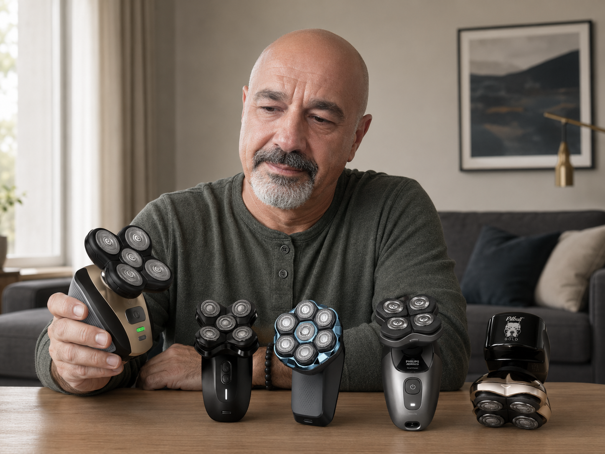

Shaving your head is a bold decision that requires the absolute perfect tool. Whether you're taking the plunge for the first time or you're a seasoned bald brother tired of razor bumps, finding a reliable electric head shaver is critical.

We spent the last 3 months buying and exhaustively testing the 5 most heavily advertised head shavers on the market. We looked past the glossy Instagram ads and judged them on three brutal criteria:
- Motor Strength & Shave Closeness: Does it cut flush, or does it leave a shadow?
- Skin Irritation: Does it cause the dreaded "red razor bumps"?
- The Financial Trap: Are they tricking you into a hidden blade subscription?
What we found shocked us. Some of the most expensive, "premium" brands failed miserably, relying on planned obsolescence and deceptive auto-billing. But one completely independent brand blew the competition out of the water.
Here are the official rankings for 2026.